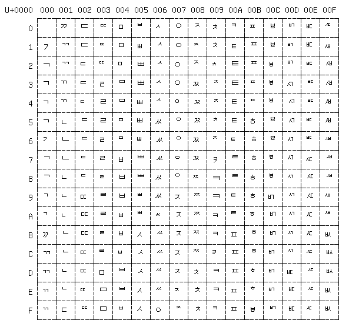
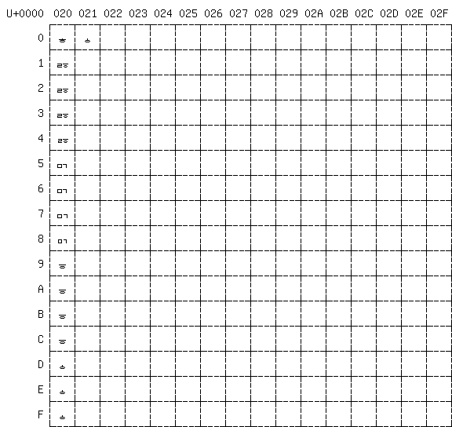

Overview
Hangul is the syllabic writing system used by Koreans to write the Korean language. Syllables are written with an initial consonant, a middle vowel or dipthong, and optionally one or two final consonants. This web page assumes that you already have basic familiarity with Hangul and are interested in creating a Hangul Syllables font. The bulk of this page describes how the Hanterm Johab glyph arrangement has been used to generate Unicode's Hangul Syllables. The ideas behind arrangement of the Hanterm Johab fonts will hopefully save others who are looking to create their own Hangul font a great deal of time.
For each syllable, the modern Korean alphabet uses 19 possible initial consonants, 21 possible vowels and dipthongs, and 26 possible final single or double consonants or no final consonant. Therefore, the modern Hangul alphabet allows writing up to 19 × 21 × 27 = 11,172 unique syllables.
Drawing 11,172 separate glyphs would be a daunting task. Fortunately, the regular nature of Hangul syllable formation allows creation of the entire Hangul Syllables block from a few variations of each character.
Motivation
I could not find a set of Hangul Syllables that was licensed under the GNU GPL unencumbered by any other restrictions, and so embarked on creating an entirely new set from scratch.
Most work on bitmapped Hangul fonts was done more than ten years before I began this effort. The world has for the most part moved on to TrueType fonts, and I could not find documentation in English about the earlier formats anywhere on the web. So along with creating a new set of Hangul Syllables, I wrote this web page to document my findings for the benefit of others.
Johab Fonts
"Johab" fonts refer to the Korean font standard KS C-5601-1992, later renamed to KS X 1001:1992, which supports encoding all possible syllables that are in modern use, as well as encoding historical characters separately. This character set is assigned to Microsoft Windows Code Page 1361. "Wansung" refers to the earlier KS C-5601-1987 standard (assigned to Microsoft Windows Code Page 949).
I've encountered two main Hangul font encodings of variations of the component characters that form syllables. Hanterm supports both of them. For one of them, there was a Perl script that Jungsik Shin wrote for the Unifont effort. It was easy to follow, and I had already modified it so I was familiar with it. For the other font encoding, commonly referred to as Johab 8/4/4, I could only find one Python script that was a translation of an earlier Perl script (which I could not find). Although Hanterm handles both of those encodings, Hanterm is a much larger program than these two scripts and so is a lot more difficult to follow.
Johab Base Font for Unifont
The system for arranging variations of Hangul letters into syllables that Unifont has used from its beginning is taken from the Hanterm Johab font encoding structure described in this section. This font encoding uses:
- 1 blank filler glyph, at position 0 in the font
- 10 variations for each initial consonant, at 0x001..0x126
- 3 or 4 variations for each vowel or dipthong, at 0x127..0x194
- 4 variations for each final consonant, at 0x195..0x210
This comes out to a little more than 500 glyphs, which is a lot easier to draw than over 11,000. There's a small catch with this encoding, though: some ancient letters are thrown in for rendering of ancient Hangul words. You don't need these to generate the Unicode Hangul Syllalbes block, so you can draw them or omit them as you please. For completeness, I drew them in the Johab-type font I created.
A picture is worth a thousand words, so let's start by taking a look at the Korean alphabet. These tables show the ordering in the Johab fonts used by Hanterm, including the ancient characters. Note that the modern characters appear in the same relative order as in the Unicode U+1100..U+11FF Hangul code block, but the ancient characters are not in the same relative order as in Unicode. Also, there are a lot of ancient characters in the Unicode U+1100..U+11FF block that do not appear in the Johab-type font.
|
|
|
||||||||||||||||||||||||||||||||||||||||||||||||||||||||||||||||||||||||||||||||||||||||||||||||||||||||||||||||||||||||||||||||||||||||||||||||||||||||||||||||||||||||||||||||||||||||||||||||||||||||||||||||||||||||||||||||||||||||||||||||||||||||||||||||||||||||||||||||||||||||||||||||||||||||||||||||||||||||||||||||||||||||||||||||||||||||||||||||||||||||||||||||||||||||||||||||||||||||||||||||||||||||
Letter Variations
Having several variations of each letter is the key to producing good-looking Hangul Syllables from a smaller set of glyphs. Jungshik Shin's johab2ucs2 Perl script picks the correct variation for each combination of initial consonant, vowel, and optional final consonant to construct the syllables. This is accomplished using a number of tables in the Perl script.
The comments in johab2ucs2 are in ASCII, with the letter names spelled out. What follows below is an explanation actually showing the Hangul letters.
Initial consonants (choseong) each have 10 variations. The first 5 are used without a final consonant (C+V) so they are taller, and the last 5 are used with a final consonant (C+V+C′). The particular variation depends upon the vowel following the initial consonant. Here's a table showing the initial consonant variation that applies for each vowel:
| Syllable | ||||
|---|---|---|---|---|
| C+V | C+V+C′ | With Modern | With Ancient | Examples |
| 1 | 6 | ᅡ, ᅢ, ᅣ, ᅤ, ᅥ, ᅦ, ᅧ, ᅨ, ᅵ | 가, 각, 간, 나, 낛, 난 | |
| 2 | 7 | ᅩ, ᅭ, ᅳ | ᆞ | 고, 곡, 곤, 노, 녻, 논 |
| 3 | 8 | ᅮ, ᅲ | 규, 귝, 균, 뉴, 뉷, 뉸 | |
| 4 | 9 | ᅪ, ᅫ, ᅬ, ᅴ | ᅹ, ᆅ, ᆈ, ᆡ | 과, 곽, 관, 놔, 놗, 놘 |
| 5 | 10 | ᅯ, ᅰ, ᅱ | ᆑ, ᆒ, ᆔ | 궤, 궥, 궨, 눼, 눿, 뉀 |
If you wish to draw your own Hangul Syllables block and use this set of variations, as you look through the glyphs consider the nine general patterns generated by taking the three possible vowel placements (only on the right, only in the middle, and both on the right and in the middle) times the three possible final consonant placements (no final consonant, one final consonant, and two final consonants next to each other). After this, get into more case-specific details. Vowels with 3 variations treat the final consonant ᆫ (N, nieun) as a special case.
Examples of all these cases appear in the "Examples" column in the table of initial consonants above. From these examples, you can deduce a few things:
- If there's no final consonant, the initial consonant and the vowel or dipthong that follows can be taller. The initial consonant variations 1–5 are therefore taller than variations 6–10.
- If the initial consonant is ᄀ (G, or kiyeok), it is drawn with a curve when a vowel mark is not underneath it, but with more of a short, straight line when a vowel mark is drawn underneath it. Although not shown in the examples, the same is true of initial ᄏ (K, or khieukh, the aspirated G). The initial consonant variations 1 and 6 for ᄀ and ᄏ have an extended curve that other variations of these two initial consonants do not have.
- If the initial consonant is ᄀ (G, or kiyeok) and it is followed with a vowel underneath that has an upward stroke, the stroke can extend further upward than for initial consonants such as ᆫ because of the open space underneath ᄀ. Although not shown in the examples, the same is true of initial ᄏ (K, or khieukh, the aspirated G). The initial consonant variations 2, 4, 7, and 9 for ᄀ and ᄏ allow a different appearance as a result.
- If the final consonant is ᆫ (N, or nieun), any vowel appearing on the right-hand side of the syllable can be drawn longer so it extends into the open space above the ᆫ. This does not affect the initial consonant's appearance, but it does affect the vowel's appearance, as we shall see next.
Each vowel or dipthong has 3 or 4 variations. If there are just 3 variations, they are applied as follows:
| Variation | When Used | Appearance |
|---|---|---|
| 1 | No final consonant. | Taller than default. |
| 2 | Final consonant isn't ᆫ. | Default size. |
| 3 | Final consonant is ᆫ. | Right-hand side can extend further down. |
Modern vowels or dipthongs that contain ᅩ, ᅭ, or ᅳ each have 4 variations. The full set is: ᅩ, ᅪ, ᅫ, ᅬ, ᅭ, ᅳ, and ᅴ. These vowels have variations based on whether the initial consonant is ᄀ, ᄏ, or something else, and whether or not there is a final consonant in the syllable. All other vowels and dipthongs, including the ancient ones, only have 3 variations each. If a vowel or dipthong has 4 variations, they are applied as follows:
| Variation | When Used | Appearance |
|---|---|---|
| 1 | Initial consonant is ᄀ or ᄏ; no final consonant | Taller than default with vertical stroke extending upward more. |
| 2 | Initial consonant isn't ᄀ or ᄏ; no final consonant | Default stroke underneath but taller. |
| 3 | Initial consonant is ᄀ or ᄏ with final consonant | Default size but longer vertical stroke underneath. |
| 4 | Initial consonant isn't ᄀ or ᄏ with final consonant | Default size. |
Lastly, each final consonant has 4 variations, depending on the vowel or dipthong that precedes it:
| Variation | With Modern | With Ancient |
|---|---|---|
| 1 | Filler, ᅡ, ᅣ, ᅪ, ᅫ, ᅬ, ᅴ | ᅹ, ᆅ, ᆈ, ᆡ |
| 2 | ᅥ, ᅧ, ᅯ, ᅰ, ᅱ, ᅵ | ᆑ, ᆒ, ᆔ |
| 3 | ᅢ, ᅤ, ᅦ, ᅨ | |
| 4 | ᅩ, ᅭ, ᅮ, ᅲ, ᅳ | ᆞ |
There is no "Filler" combination in the Hangul Syllalbes block, where a syllable can contain an initial consonant and a final consonant, but no vowel. The "Filler" entry is included just to explain that case with this type of Johab font in general. As for the appearance of other final consonant variations based upon the preceding vowels, they should be drawn so that a balance is achieved between the top half and left half of a syllable, and between the left half and right half of a syllable.
Here are the three bitmap files showing the glyphs from which the Hangul Syllables Unicode block is generated:
| hanbase-00.bmp: |
|  |
| hanbase-01.bmp: |

|
| hanbase-02.bmp: |
|  |
To modify the font, I recommend the following general steps:
- Have an idea of the grid you will use. For example, you might want all syllables centered in a grid, or left-justified, or you might want to guarantee that there is a perimeter of one or more blank pixels on the outer edges of each syllable.
- Start drawing from the bottom up, with the final consonants. Consider the minimum vertical space you will need to draw ᄅ (rieul) and similar final consonants. Use that minimum height as your starting point to generate a first set of all final consonants.
-
Combine these in your grid with various vowel combinations,
so that the result looks balanced:
- Vowels only on the right
- Vowels only in the middle
- Vowels on the right and in the middle
- Finally, draw the initial consonants to fit in the space that remains.
Be prepared to go through numerous iterations of adjustment to get the syllables to the stage where you are satisfied. If you're after perfection, you could then hand-tune each of the 11,172 resulting Hangul Syllables glyphs.
Generating the Syllables
Equipped with your carefully drawn and cross-checked Johab font, you can superimpose an initial consonant, vowel, and optional final consonant to construct all of the Hangul Syllables. Here's the basic algorithm:
code_point = U+AC00 /* Starting point of Hangul Syllables */
for all (19 modern initial consonants) {
for all (21 modern vowels) {
for all (28 filler and modern final consonants) {
superimpose the 2 or 3 components
output the glyph for this code point
increment code_point by 1
}
}
}
That algorithm, in a nutshell, is what johab2ucs2 does. This will generate 19 × 21 × 28 = 11,172 syllables, in the order in which they appear in the Unicode Standard. The table below shows the starting Unicode code point of each initial consonant in the Hangul Syllables block.
| Initial Consonant | Start |
|---|---|
| ᄀ | U+AC00 |
| ᄁ | U+AE4C |
| ᄂ | U+B098 |
| ᄃ | U+B2E4 |
| ᄄ | U+B530 |
| ᄅ | U+B77C |
| ᄆ | U+B9C8 |
| ᄇ | U+BC14 |
| ᄈ | U+BE60 |
| ᄉ | U+C0AC |
| ᄊ | U+C2F8 |
| ᄋ | U+C544 |
| ᄌ | U+C790 |
| ᄍ | U+C9DC |
| ᄎ | U+CC28 |
| ᄏ | U+CE74 |
| ᄐ | U+D0C0 |
| ᄑ | U+D30C |
| ᄒ | U+D558 |
Hangul Syllables Tools
The following link is a gzipped tarball containing the files that I used to generate the Hangul Syllables block: http://www.unifoundry.com/hangul.tar.gz. You'll also need to install Perl and the main Unifont programs unibmp2hex and hex2bdf before building the syllables. The files in this tar file are:
- hangul-generation.html: This web page, as documentation.
- hanbase-00.bmp, hanbase-01.bmp, and hanbase-02.bmp: These are the bitmap graphics files of the individual glyphs that I drew. These get superimposed upon each other to form the Hangul Syllables.
- johab2ucs2: to be on the safe side, the exact version of the johab2ucs2 Perl script that I used to generate the Hangul Syllables. Note that the Unifont distribution also contains a copy of this script.
- unifontksx: Perl script to read a Unifont .hex file, extract the 2,350 pre-formed Hangul syllables defined in KS X 1001, and generate glyphs with unihex2bmp (part of the Unifont distribution on this site).
-
Makefile: the "make" file. Type "make" to make the output
.hex font files and bitmapped images of syllables. Type
"make clean" to remove these files. Typing "make" will create:
- hangul-base.hex: a Unifont .hex style encoding of the base glyphs that will form the Hangul Syllables block. This is created with unibmp2hex, part of the Unifont distribution on this site.
- hangul-base.bdf: a BDF font file with the same font structure that Hanterm uses for Hangul syllables, which johab2ucs2 reads to generate all 11,172 syllables. This is created using hex2bdf, part of the Unifont distribution on this site.
- hangul-syllables.hex: the set of 11,172 Unicode Hangul Syllables in the block starting at U+AC00. This is created by johab2ucs2, which uses hangul-base.bdf as its input.
- ksx-syllables.hex: an extraction of hangul-syllables.hex, created by unifontksx, which only contains the subset of Unifont Hangul Syllables that appear in the Republic of Korea's KS X 1001 standard (and the earlier KS C 5601 standard).
- johab2ucs2.1, unifontksx.1: The man pages for the Perl scripts.
- syllables: directory that will contain all 11,172 glyphs in the Unifont Hangul Syllables block.
- ksx-syllables: directory that will contain the subset of Unifont Hangul Syllables that appear in the Republic of Korea's KS X 1001 standard (and the earlier KS C 5601 standard).
To create the Hangul Syllables as both a Unifont ".hex" file and a "./syllables/" directory of bitmap representations of each of the 11,172 syllables:
- Install the Unifont programs in your path.
- Untar the files in hangul.tar.gz.
- cd into the "hangul" directory.
- Run "make". This will generate the files "hangul-base.hex" and then "hangul-base.bdf" from the "hanbase-??.bmp" files, and then generate the files "syllables/hangul-AC.bmp" through "syllables/hangul-D7.bmp" from "hangul-syllables.hex". Finally, this will populate the "ksx-syllables/" directory with bitmapped glyphs from the complete Unifont set that comprise the 2,350 syllables defined in KS X 1001.
You can inspect the generated bitmap files, modify the "hanbase-??.bmp" files to your heart's content to see how variations carry through to the final syllables, and so on. If you make any improvements, please forward them to me so I can incorporate them into a later version. I haven't spent much time on the ancient letters because my focus was on generating Hangul Syllables from scratch, so there's probably room for improvement at least with them.
License
The files in the hangul.tar.gz archive are distributed under the GNU Public License version 2, or (at your option) a later version, with the exception that embedding the fonts in a document does not in itself constitute a violation of the license agreement.
Other Variation Schemes
What was described above is only one possible scheme for drawing variations to combine into whole syllables. I used it because I had already worked with it. In the end, I haven't found a better scheme, though better schemes are certainly possible. One other font scheme that deserves mention because of its popularity is the Johab 8/4/4 encoding, discussed in the following section.
Johab 8/4/4 Font Layout
Johab 8/4/4 fonts store variations in transposed order compared to the Johab version described above. For example, all 20 of the first variation of initial consonants are stored in sequence, then all 20 of the second variation of initial consonants in sequence, etc. Each type of variation sequence (initial consonant, vowel, and final consonant) begins with a Filler (blank) glyph. Therefore, each variation sequence has one more entry than letters in the modern Hangul alphabet. Presumably this is to allow rendering an individual letter such as a vowel by itself with no initial or final consonant.
Johab 8/4/4 fonts have a fixed number of variations for each letter of the modern Hangul alphabet (no ancient letters are included):
- Each initial consonant has 8 variations;
- Each vowel has 4 variations;
- Each final consonant has 4 variations.
This scheme has one aesthetic drawback compared to that used by johab2ucs2: there is no separate vowel form for vertically-drawn vowels when combined with final consonant ᆫ to allow the vowel to extend down further into the space occupied by ᆫ. For example, the syllable 간 looks more filled out and pleasing to the eye if the vowel, ᅡ, extends down below the top half of the syllable.
The glyph layout by code point in Johab 8/4/4 fonts are:
-
0..159: Initial Consonants
[(Filler + 19 consonants) × 8 variations].
This is formed as 8 repetitions of the sequence: Filler, ᄀ, ᄁ, ᄂ, ᄃ, ᄄ, ᄅ, ᄆ, ᄇ, ᄈ, ᄉ, ᄊ, ᄋ, ᄌ, ᄍ, ᄎ, ᄏ, ᄐ, ᄑ, ᄒ. Thus, for example, the 8 variations of ᄀ appear at decimal font locations 1, 21, 41, 61, 81, 101, 121, and 141. -
160..247: Vowels
[(Filler + 21 vowels) × 4 variations].
This is formed as 4 repetitions of the sequence: Filler, ᅡ, ᅢ, ᅣ, ᅤ, ᅥ, ᅦ, ᅧ, ᅨ, ᅩ, ᅪ, ᅫ, ᅬ, ᅭ, ᅮ, ᅯ, ᅰ, ᅱ, ᅲ, ᅳ, ᅴ, ᅵ. Thus, for example, the 4 variations of ᅡ appear at decimal font locations 161, 183, 205, and 227. -
248..359: Final Consonants
[(Filler + 27 consonants) × 4 variations].
This is formed as 4 repetitions of the sequence: Filler, ᆨ, ᆩ, ᆪ, ᆫ, ᆬ, ᆭ, ᆮ, ᆯ, ᆰ, ᆱ, ᆲ, ᆳ, ᆴ, ᆵ, ᆶ, ᆷ ᆸ, ᆹ, ᆺ, ᆻ, ᆼ, ᆽ, ᆾ, ᆿ, ᇀ, ᇁ, ᇂ. Thus, for example, the 4 variations of ᆨ appear at decimal font locations 249, 277, 305, and 333.
I found one Python script on the net (jo844touni.py) that returned the Hangul component glyphs (initial consonant, vowel, and final consonant) for each code point in the Unicode Hangul Syllables block. What follows is a description based upon reverse-engineering that Python script, and looking at existing "johab844-" fonts for verification.
The initial consonant variations are based upon the vowel that follows, and whether or not there is a final consonant. Like the Johab font structure described previously, there are 5 variations when there is no final consonant. Unlike that Johab font structure, there are only 3 variations instead of 5 when there is a final consonant.
| Johab 8/4/4 Initial Consonants | ||
|---|---|---|
| Variation | Combining Vowels | + Final Consonant? |
| 1 | Filler, ᅡ, ᅢ, ᅣ, ᅤ, ᅥ, ᅦ, ᅧ, ᅨ, ᅵ | No |
| 2 | ᅩ, ᅭ, ᅳ | No |
| 3 | ᅮ, ᅲ | No |
| 4 | ᅪ, ᅫ, ᅬ, ᅴ | No |
| 5 | ᅯ, ᅰ, ᅱ | No |
| 6 | Filler, ᅡ, ᅢ, ᅣ, ᅤ, ᅥ, ᅦ, ᅧ, ᅨ, ᅵ | Yes |
| 7 | ᅩ, ᅭ, ᅮ, ᅲ, ᅳ | Yes |
| 8 | ᅪ, ᅫ, ᅬ, ᅯ, ᅰ, ᅱ, ᅴ | Yes |
Like the previous Johab font structure, vowels can have 4 variations based upon whether or not the initial consonant is ᄀ or ᄏ, and whether or not there is a final consonant. Unlike the previous Johab font structure, there is no separate variation for the case where the final consonant is ᆫ (N, nieun).
| Johab 8/4/4 Vowels | ||
|---|---|---|
| Variation | Initial Consonant = Filler, ᄀ, or ᄏ? | + Final Consonant? |
| 1 | Yes | No |
| 2 | No | No |
| 3 | Yes | Yes |
| 4 | No | Yes |
Also similar to the previous Johab font structure, final consonants each have 4 variations:
| Johab 8/4/4 Final Consonants | |
|---|---|
| Variation | Combining Vowels |
| 1 | Filler, ᅡ, ᅣ, ᅪ |
| 2 | ᅥ, ᅧ, ᅬ, ᅯ, ᅱ, ᅴ, ᅵ |
| 3 | ᅢ, ᅤ, ᅦ, ᅨ, ᅫ, ᅰ |
| 4 | ᅩ, ᅭ, ᅮ, ᅲ, ᅳ |
Seeking Perfection
As a final thought, someone seeking perfection in rendering Hangul Syllables could use one of these encoding methods, or a method of their own design, to produce a block of Hangul Syllables as a starting point. From there, each syllable glyph could be hand-tailored as desired.
With the current johab2ucs2 algorithm, there are just two cases for drawing every possible vowel plus every possible final consonant: the case where the initial consonant is ᄀ or ᄏ, and the default case (for all other initial consonants). Therefore if you get the spacing worked out with all the syllables formed using the intial consonant ᄀ and, say, the final consonant ᄅ or ᄎ, everything else should fall into place. That is not what I did at first — I made some false starts — but if I were to do it over that is the path I would take.
There are 19 modern vowels and 27 final consonants plus a filler (when there is no final consonant), which requires drawing 19 × 28 = 588 glyphs for every possible combination of modern vowel and final consonant (or filler). To allow a separate form when the initial consonant is ᄀ or ᄏ, you'd need twice that number, or 1176 glyphs. Yet by starting with the Johab font structure that johab2ucs2 supports, these can be auto-generated in bulk and then hand-tuned after generation.
Along with 10 variations for each of the initial 19 modern consonants, this approach requires a total of 1176 + 190 = 1366 glyphs. That's significantly more than the current Johab scheme of 190 + 70 + 108 = 368 modern glyphs, but it would allow finer adjustment and balance. In fact, it could potentially save total development time because it would reduce the number of iterations to achieve a desired look.
Korean Standard KS X 1001:1992
The Hangul Syllables block contains every possible combination of modern initial consonants, vowels, and optional final consonants. In practice, only about one fourth of these syllables are common in modern-day Korean. Focus could be placed on these more common modern syllables.
One list of such common modern Hangul syllables appears in KS X 1001:1992, which defines 2,350 Hangul syllables as "rows" 16 through 40 of the standard, each with 94 Hangul syllables. This division into sets of 94 glyphs is patterned after the ISO 2022 standard. In ISO 2022, characters are divided into blocks of seven bits, or 27 = 128 code points. The first 32 code points are reserved for control codes. The next code point is the space character, and code point 127 is the delete character. In a seven-bit block of code points, this leaves 128 - 32 (control codes) - 1 (space) - 1 (delete) = 94 available code points. There is a mapping from KS X 1001 to ISO 2022 following this ordering. For more on this, consult the ISO 2022 standard.
The syllables that comprise KS X 1001:1992 are shown below, organized into "rows" 16 through 40, with each row containing 94 syllables:
| KS X 1001:1992 Row |
Syllables |
|---|---|
| 16 | 가각간갇갈갉갊감갑값갓갔강갖갗같갚갛개객갠갤갬갭갯갰갱갸갹갼걀걋걍걔걘걜거걱건걷걸걺검겁것겄겅겆겉겊겋게겐겔겜겝겟겠겡겨격겪견겯결겸겹겻겼경곁계곈곌곕곗고곡곤곧골곪곬곯곰곱곳공곶과곽관괄괆 |
| 17 | 괌괍괏광괘괜괠괩괬괭괴괵괸괼굄굅굇굉교굔굘굡굣구국군굳굴굵굶굻굼굽굿궁궂궈궉권궐궜궝궤궷귀귁귄귈귐귑귓규균귤그극근귿글긁금급긋긍긔기긱긴긷길긺김깁깃깅깆깊까깍깎깐깔깖깜깝깟깠깡깥깨깩깬깰깸 |
| 18 | 깹깻깼깽꺄꺅꺌꺼꺽꺾껀껄껌껍껏껐껑께껙껜껨껫껭껴껸껼꼇꼈꼍꼐꼬꼭꼰꼲꼴꼼꼽꼿꽁꽂꽃꽈꽉꽐꽜꽝꽤꽥꽹꾀꾄꾈꾐꾑꾕꾜꾸꾹꾼꿀꿇꿈꿉꿋꿍꿎꿔꿜꿨꿩꿰꿱꿴꿸뀀뀁뀄뀌뀐뀔뀜뀝뀨끄끅끈끊끌끎끓끔끕끗끙 |
| 19 | 끝끼끽낀낄낌낍낏낑나낙낚난낟날낡낢남납낫났낭낮낯낱낳내낵낸낼냄냅냇냈냉냐냑냔냘냠냥너넉넋넌널넒넓넘넙넛넜넝넣네넥넨넬넴넵넷넸넹녀녁년녈념녑녔녕녘녜녠노녹논놀놂놈놉놋농높놓놔놘놜놨뇌뇐뇔뇜뇝 |
| 20 | 뇟뇨뇩뇬뇰뇹뇻뇽누눅눈눋눌눔눕눗눙눠눴눼뉘뉜뉠뉨뉩뉴뉵뉼늄늅늉느늑는늘늙늚늠늡늣능늦늪늬늰늴니닉닌닐닒님닙닛닝닢다닥닦단닫달닭닮닯닳담답닷닸당닺닻닿대댁댄댈댐댑댓댔댕댜더덕덖던덛덜덞덟덤덥 |
| 21 | 덧덩덫덮데덱덴델뎀뎁뎃뎄뎅뎌뎐뎔뎠뎡뎨뎬도독돈돋돌돎돐돔돕돗동돛돝돠돤돨돼됐되된될됨됩됫됴두둑둔둘둠둡둣둥둬뒀뒈뒝뒤뒨뒬뒵뒷뒹듀듄듈듐듕드득든듣들듦듬듭듯등듸디딕딘딛딜딤딥딧딨딩딪따딱딴딸 |
| 22 | 땀땁땃땄땅땋때땍땐땔땜땝땟땠땡떠떡떤떨떪떫떰떱떳떴떵떻떼떽뗀뗄뗌뗍뗏뗐뗑뗘뗬또똑똔똘똥똬똴뙈뙤뙨뚜뚝뚠뚤뚫뚬뚱뛔뛰뛴뛸뜀뜁뜅뜨뜩뜬뜯뜰뜸뜹뜻띄띈띌띔띕띠띤띨띰띱띳띵라락란랄람랍랏랐랑랒랖랗 |
| 23 | 래랙랜랠램랩랫랬랭랴략랸럇량러럭런럴럼럽럿렀렁렇레렉렌렐렘렙렛렝려력련렬렴렵렷렸령례롄롑롓로록론롤롬롭롯롱롸롼뢍뢨뢰뢴뢸룀룁룃룅료룐룔룝룟룡루룩룬룰룸룹룻룽뤄뤘뤠뤼뤽륀륄륌륏륑류륙륜률륨륩 |
| 24 | 륫륭르륵른를름릅릇릉릊릍릎리릭린릴림립릿링마막만많맏말맑맒맘맙맛망맞맡맣매맥맨맬맴맵맷맸맹맺먀먁먈먕머먹먼멀멂멈멉멋멍멎멓메멕멘멜멤멥멧멨멩며멱면멸몃몄명몇몌모목몫몬몰몲몸몹못몽뫄뫈뫘뫙뫼 |
| 25 | 묀묄묍묏묑묘묜묠묩묫무묵묶문묻물묽묾뭄뭅뭇뭉뭍뭏뭐뭔뭘뭡뭣뭬뮈뮌뮐뮤뮨뮬뮴뮷므믄믈믐믓미믹민믿밀밂밈밉밋밌밍및밑바박밖밗반받발밝밞밟밤밥밧방밭배백밴밸뱀뱁뱃뱄뱅뱉뱌뱍뱐뱝버벅번벋벌벎범법벗 |
| 26 | 벙벚베벡벤벧벨벰벱벳벴벵벼벽변별볍볏볐병볕볘볜보복볶본볼봄봅봇봉봐봔봤봬뵀뵈뵉뵌뵐뵘뵙뵤뵨부북분붇불붉붊붐붑붓붕붙붚붜붤붰붸뷔뷕뷘뷜뷩뷰뷴뷸븀븃븅브븍븐블븜븝븟비빅빈빌빎빔빕빗빙빚빛빠빡빤 |
| 27 | 빨빪빰빱빳빴빵빻빼빽뺀뺄뺌뺍뺏뺐뺑뺘뺙뺨뻐뻑뻔뻗뻘뻠뻣뻤뻥뻬뼁뼈뼉뼘뼙뼛뼜뼝뽀뽁뽄뽈뽐뽑뽕뾔뾰뿅뿌뿍뿐뿔뿜뿟뿡쀼쁑쁘쁜쁠쁨쁩삐삑삔삘삠삡삣삥사삭삯산삳살삵삶삼삽삿샀상샅새색샌샐샘샙샛샜생샤 |
| 28 | 샥샨샬샴샵샷샹섀섄섈섐섕서석섞섟선섣설섦섧섬섭섯섰성섶세섹센셀셈셉셋셌셍셔셕션셜셤셥셧셨셩셰셴셸솅소속솎손솔솖솜솝솟송솥솨솩솬솰솽쇄쇈쇌쇔쇗쇘쇠쇤쇨쇰쇱쇳쇼쇽숀숄숌숍숏숑수숙순숟술숨숩숫숭 |
| 29 | 숯숱숲숴쉈쉐쉑쉔쉘쉠쉥쉬쉭쉰쉴쉼쉽쉿슁슈슉슐슘슛슝스슥슨슬슭슴습슷승시식신싣실싫심십싯싱싶싸싹싻싼쌀쌈쌉쌌쌍쌓쌔쌕쌘쌜쌤쌥쌨쌩썅써썩썬썰썲썸썹썼썽쎄쎈쎌쏀쏘쏙쏜쏟쏠쏢쏨쏩쏭쏴쏵쏸쐈쐐쐤쐬쐰 |
| 30 | 쐴쐼쐽쑈쑤쑥쑨쑬쑴쑵쑹쒀쒔쒜쒸쒼쓩쓰쓱쓴쓸쓺쓿씀씁씌씐씔씜씨씩씬씰씸씹씻씽아악안앉않알앍앎앓암압앗았앙앝앞애액앤앨앰앱앳앴앵야약얀얄얇얌얍얏양얕얗얘얜얠얩어억언얹얻얼얽얾엄업없엇었엉엊엌엎 |
| 31 | 에엑엔엘엠엡엣엥여역엮연열엶엷염엽엾엿였영옅옆옇예옌옐옘옙옛옜오옥온올옭옮옰옳옴옵옷옹옻와왁완왈왐왑왓왔왕왜왝왠왬왯왱외왹왼욀욈욉욋욍요욕욘욜욤욥욧용우욱운울욹욺움웁웃웅워웍원월웜웝웠웡웨 |
| 32 | 웩웬웰웸웹웽위윅윈윌윔윕윗윙유육윤율윰윱윳융윷으윽은을읊음읍읏응읒읓읔읕읖읗의읜읠읨읫이익인일읽읾잃임입잇있잉잊잎자작잔잖잗잘잚잠잡잣잤장잦재잭잰잴잼잽잿쟀쟁쟈쟉쟌쟎쟐쟘쟝쟤쟨쟬저적전절젊 |
| 33 | 점접젓정젖제젝젠젤젬젭젯젱져젼졀졈졉졌졍졔조족존졸졺좀좁좃종좆좇좋좌좍좔좝좟좡좨좼좽죄죈죌죔죕죗죙죠죡죤죵주죽준줄줅줆줌줍줏중줘줬줴쥐쥑쥔쥘쥠쥡쥣쥬쥰쥴쥼즈즉즌즐즘즙즛증지직진짇질짊짐집짓 |
| 34 | 징짖짙짚짜짝짠짢짤짧짬짭짯짰짱째짹짼쨀쨈쨉쨋쨌쨍쨔쨘쨩쩌쩍쩐쩔쩜쩝쩟쩠쩡쩨쩽쪄쪘쪼쪽쫀쫄쫌쫍쫏쫑쫓쫘쫙쫠쫬쫴쬈쬐쬔쬘쬠쬡쭁쭈쭉쭌쭐쭘쭙쭝쭤쭸쭹쮜쮸쯔쯤쯧쯩찌찍찐찔찜찝찡찢찧차착찬찮찰참찹찻 |
| 35 | 찼창찾채책챈챌챔챕챗챘챙챠챤챦챨챰챵처척천철첨첩첫첬청체첵첸첼쳄쳅쳇쳉쳐쳔쳤쳬쳰촁초촉촌촐촘촙촛총촤촨촬촹최쵠쵤쵬쵭쵯쵱쵸춈추축춘출춤춥춧충춰췄췌췐취췬췰췸췹췻췽츄츈츌츔츙츠측츤츨츰츱츳층 |
| 36 | 치칙친칟칠칡침칩칫칭카칵칸칼캄캅캇캉캐캑캔캘캠캡캣캤캥캬캭컁커컥컨컫컬컴컵컷컸컹케켁켄켈켐켑켓켕켜켠켤켬켭켯켰켱켸코콕콘콜콤콥콧콩콰콱콴콸쾀쾅쾌쾡쾨쾰쿄쿠쿡쿤쿨쿰쿱쿳쿵쿼퀀퀄퀑퀘퀭퀴퀵퀸퀼 |
| 37 | 큄큅큇큉큐큔큘큠크큭큰클큼큽킁키킥킨킬킴킵킷킹타탁탄탈탉탐탑탓탔탕태택탠탤탬탭탯탰탱탸턍터턱턴털턺텀텁텃텄텅테텍텐텔템텝텟텡텨텬텼톄톈토톡톤톨톰톱톳통톺톼퇀퇘퇴퇸툇툉툐투툭툰툴툼툽툿퉁퉈퉜 |
| 38 | 퉤튀튁튄튈튐튑튕튜튠튤튬튱트특튼튿틀틂틈틉틋틔틘틜틤틥티틱틴틸팀팁팃팅파팍팎판팔팖팜팝팟팠팡팥패팩팬팰팸팹팻팼팽퍄퍅퍼퍽펀펄펌펍펏펐펑페펙펜펠펨펩펫펭펴편펼폄폅폈평폐폘폡폣포폭폰폴폼폽폿퐁 |
| 39 | 퐈퐝푀푄표푠푤푭푯푸푹푼푿풀풂품풉풋풍풔풩퓌퓐퓔퓜퓟퓨퓬퓰퓸퓻퓽프픈플픔픕픗피픽핀필핌핍핏핑하학한할핥함합핫항해핵핸핼햄햅햇했행햐향허헉헌헐헒험헙헛헝헤헥헨헬헴헵헷헹혀혁현혈혐협혓혔형혜혠 |
| 40 | 혤혭호혹혼홀홅홈홉홋홍홑화확환활홧황홰홱홴횃횅회획횐횔횝횟횡효횬횰횹횻후훅훈훌훑훔훗훙훠훤훨훰훵훼훽휀휄휑휘휙휜휠휨휩휫휭휴휵휸휼흄흇흉흐흑흔흖흗흘흙흠흡흣흥흩희흰흴흼흽힁히힉힌힐힘힙힛힝 |
If tradeoffs were necessary (and they will be), a font designer could give preference to the list of 2,350 glyphs above that are the most common in daily use.
In Conclusion
This web page has information I wish I had at my fingertips when first setting out to create a Hangul Syllables block from scratch. It describes paths I will probably take in the future if I do more work on Hangul fonts. If you intend to design a Hangul font, this description of base font structures hopefully will give you useful ideas in Hangul font glyph organization. If you have suggestions for improving the content of this web page, please let me know.
Lastly, if you want to improve the Hangul Syllables in Unifont, this page describes the organization of the Hangul base glyphs that generated Unifont's Hangul Syllables block. You are more than welcome to improve on those glyphs. Thanks!